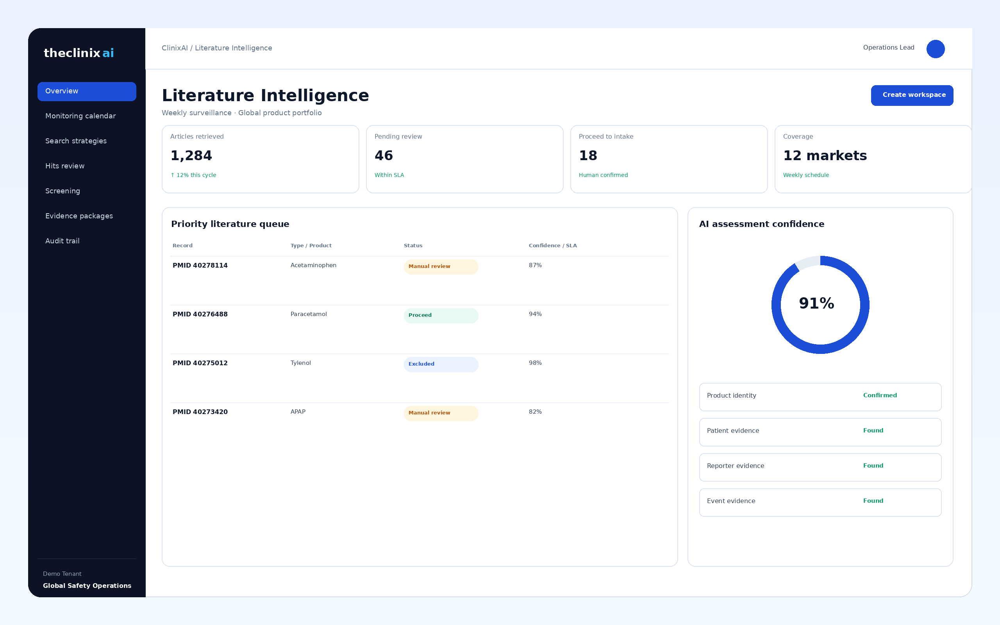
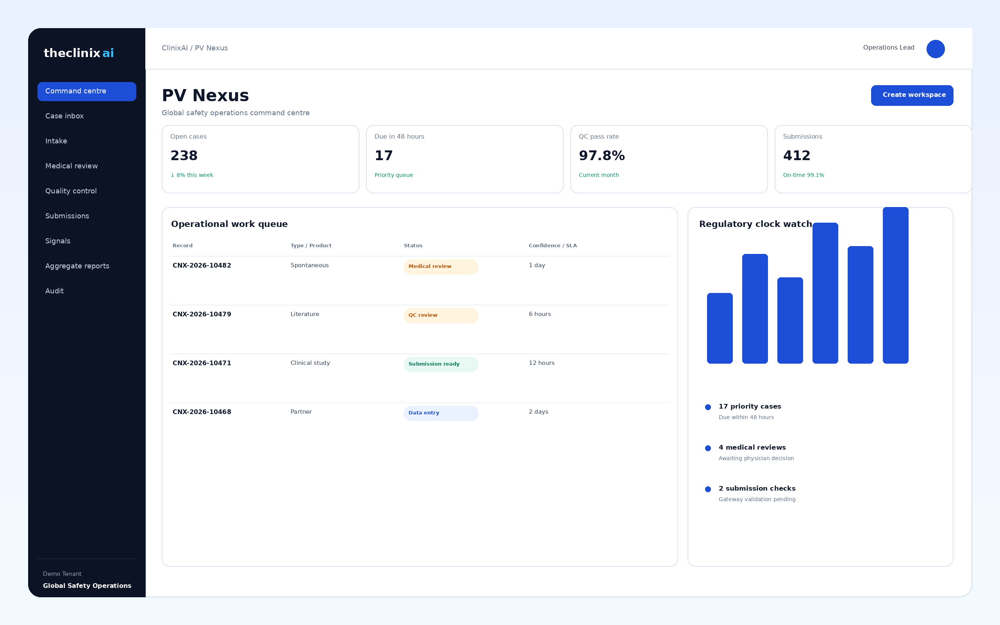
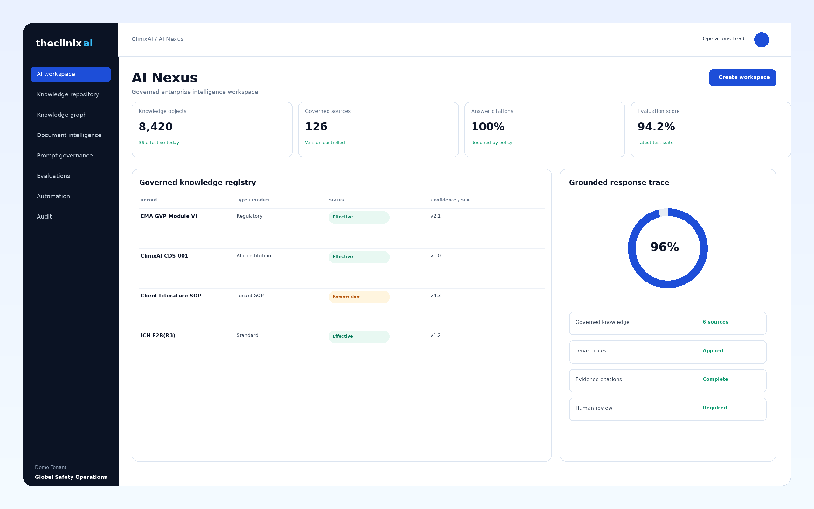

White Papers
Research built for regulated decisions.


365-day audit ready.

Research built for regulated decisions.
Practical perspectives from PV professionals.
Company milestones and industry coverage.
Zero-data-retention AI. Seamless safety integrations.